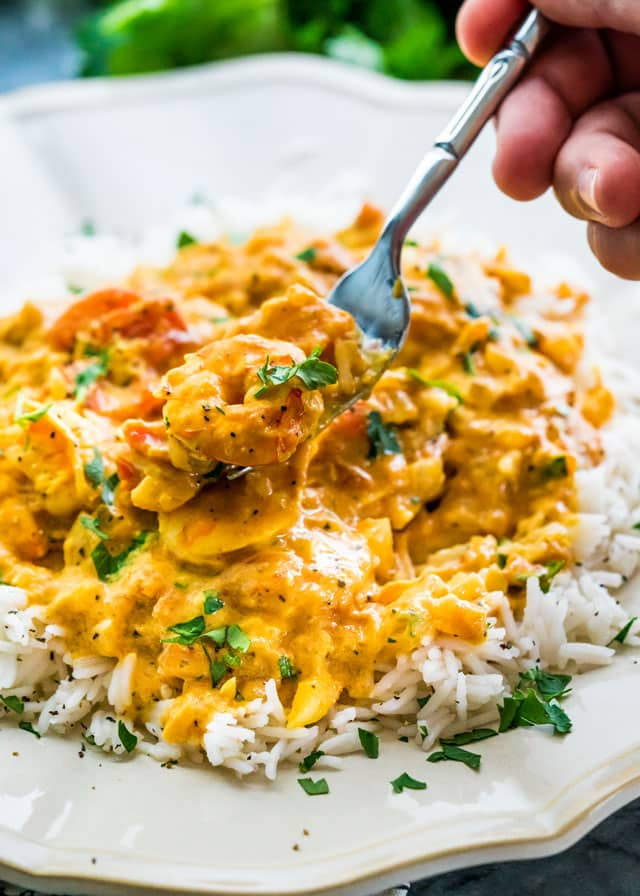

Auntie B's Curried Shrimp

Description
This is the curried shrimp recipe that my family has had every Christmas
eve since I can remember. Over 40 years! It isn't Christmas without this.
Ingredients
- 1/4 cup melted butter
- 1/4 cup flour
- 1/2 tsp salt
- dash of paprika
- 1 tsp curry powder (McCormick as per Mom)
- 1 1/2 cups milk
- 3 tbsp ketchup
- 1/4 cup cooking sherry
- 1 1/2 cups cooked, cleaned shrimp
- 2 cups cooked rice
Instructions
- Cook rice
- Over medium heat, blend butter, flour, and seasonings. Gradually stir
in milk. Turn down heat and simmer until thick and smooth, stirring
constantly.
- Stir in ketchup, sherry, and shrimp, and heat through.
- Serve atop warm rice.